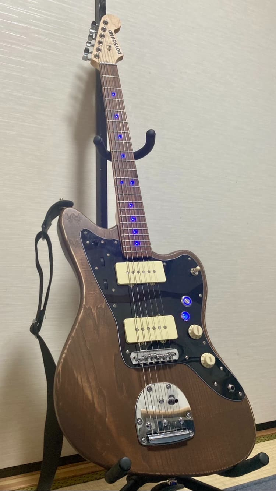
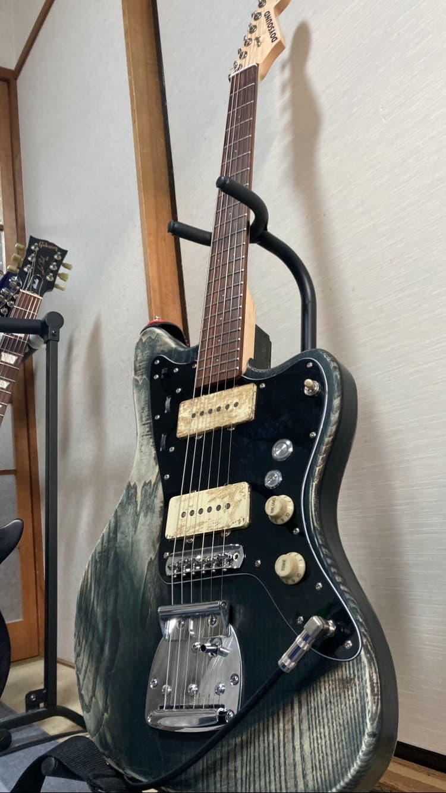
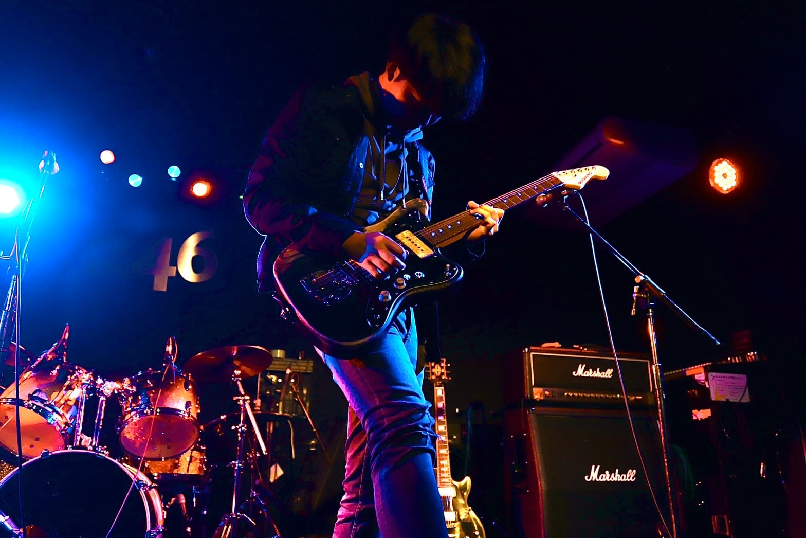

ジャズマスタータイプギター

モダンな仕様とヴィンテージ風のデザインを融合させたジャズマスタータイプのギターを製作しました。
Version 1

製作したのは2022年3月で、その後2回の改良を経て、現在のような仕上がりになりました。
最初のモデルは、ポジションマークにLEDを埋め込み、リアピックアップの下に電源スイッチとタッチタイプの
キルスイッチを設置しました。
Version 2

こちらのモデルは2023年3月に塗装を新たに施したものです。

このギターは卒業ライブでも使用したので、大変思い入れがあります。
Version 3
こちらは2023年6月に水分を取り除くために1か月間浴室乾燥機で乾燥させた後のものです。
LED回路がノイズの原因となっていたため、最終的にLED回路は取り除きました